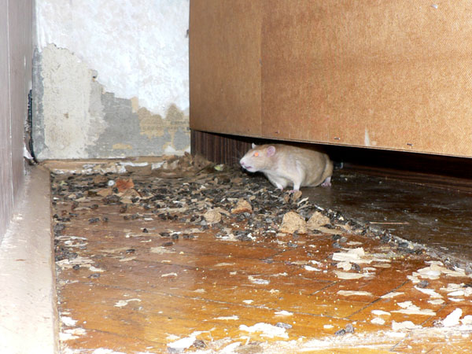
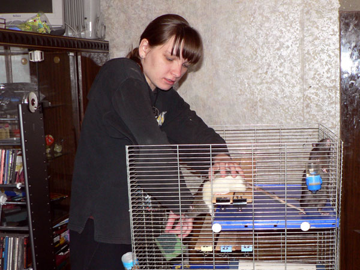
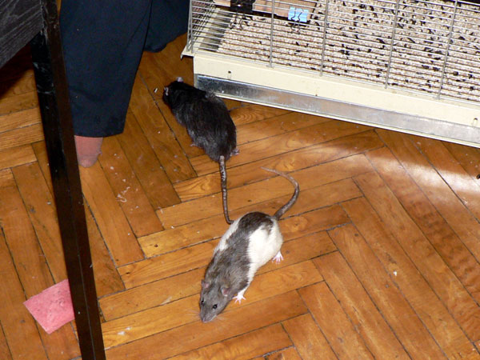
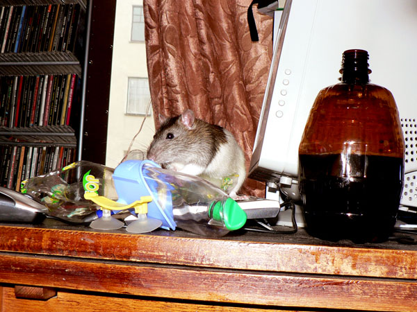
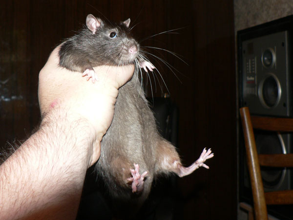
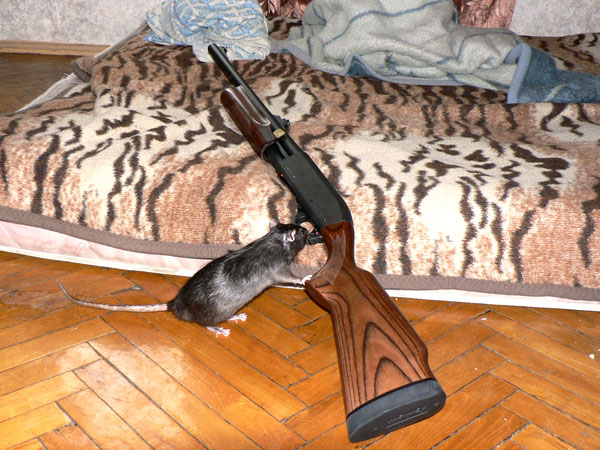
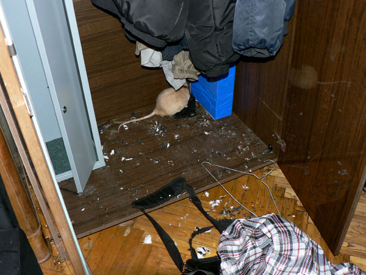
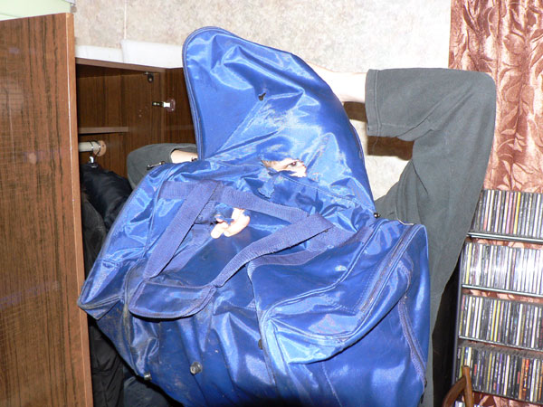
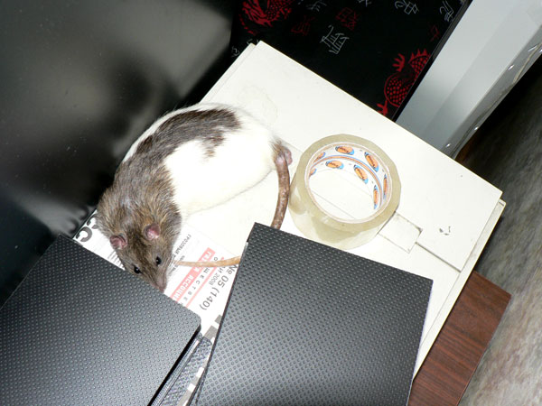

Июнь 2008
Фильм ужасов. Этот шкаф не отодвигался полгода...

Эрик: — А я что? А я ничего. Я это не мог один сделать, правда? И вообще это не я...

— Ужас-то какой!

— Я это... пойду...

Глобальная чистка клетки. Наглые крысы забираются по стенке и лезут внутрь отстаивать клетку от уборки.

Благородные доны выдворяются в очередной раз...

Дон Румата и Нагваль Никодим идут за помощью.

Дон Рэба нацелился на очередное пролезание в клетку.

Дон Румата: — А это что? Новая поилка?

Эрик: — Штора?! Я тут случайно проходил! Не я это!

Просто пойманный дон Рэба.

Его брат — дон Румата.

Нагваль Никодим: — А что будет, если потянуть вот за эту железку?

Лоснящийся крыс Никодим.

Фильм ужасов, вторая серия. Уборка в шкафу,
который не всегда закрывался.
Эрик: — Нет, это не я!!!

— Пошел я отсюда... Я тут случайно, первый раз...

Моя сумка с новой перфорацией.

Танина сумка в новых кружевах.

Дон Румата скромно спит на сканнере.